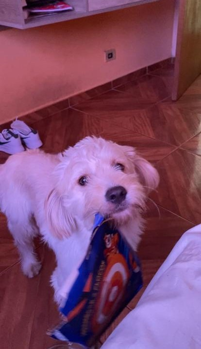
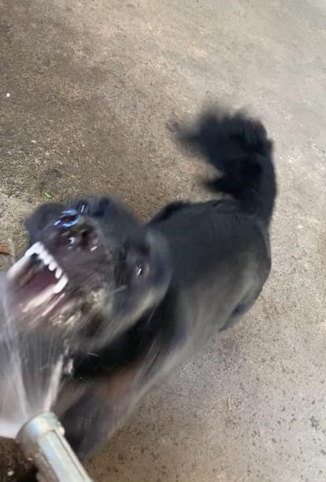

Loki
Loki é o mais novo entre os três;
Foi resgatado na pista em Janeiro de 2022;
Ele tem em média 1 ano e 5 meses;
Apesar de parecer fraco ele bate no Theo e no Max;
É o mais magro, mas bota mais medo que os outros;
É o mais mansinho e amoroso;
Motivo do nome: sou fã da Marvel e ele é traiçoeiro.

Max
Max é o mais velho entre os três;
Foi adotado em 2011;
Ele tem em média 12 anos;
Apesar de parecer forte e de ser um labrador, apanha para o Loki;
É mansinho com quem conhece;
Amoroso, ama fugir quando abrimos o portão;
Motivo do nome: meu pai que deu.
Theo
Theo é o do meio;
Foi resgatado na rua em Junho de 2021;
Ele tem em média 1 ano e 10 meses;
Ele é gordinho e rebaixadinho;
Ele é capaz de dormir em absolutamente qualquer posição;
Se o Theo fosse um ser humano ele seria um hippie;
Motivo do nome: era para ser Thor mas Thor só combina com pitbull.
